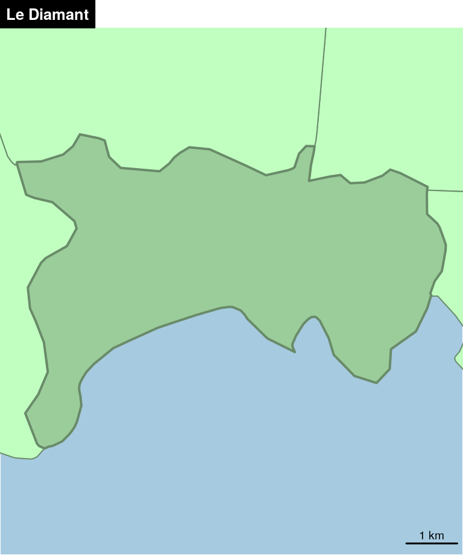

Chapitre 2 Cartographie thématique
Nous ne détaillerons pas ici les règles de la cartographie thématique. Le lecteur pourra se référer à divers ouvrages de référence : Bertin (1967), Pumain and Béguin (2010), Lambert and Zanin (2016)
2.1 Le package cartography
Le package cartography (Giraud and Lambert 2018a) permet de créer et intégrer des cartes thématiques dans sa chaîne de traitements en R. Il permet des représentations cartographiques tels que les cartes en symboles proportionnels, des cartes choroplèthes, des typologies, des cartes de flux ou des cartes de discontinuités. Il offre également des fonctions qui permettent d’améliorer la réalisation de la carte, comme des palettes de couleur, des éléments d’habillage (échelle, flèche du nord, titre, légende…), d’y rattacher des labels ou d’accéder à des APIs cartographiques.
Pour utiliser aisément ce package, plusieurs sources d’intérêts peuvent être consultées :
- La documentation du package accessible directement dans R :
?cartography- La vignette associée au package présente des exemples de scripts
vignette("cartography")Le blog R Géomatique met à disposition ressources et exemples liés au package et plus généralement à l’écosystème spatiale de R.
La cheat sheet de cartography, qui résume les principales fonctions du package de façon synthétique.

2.2 Représentations usuelles
2.2.1 Carte de symboles proportionnels
Plusieurs symboles sont disponibles : cercles, carrés et bars.
library(cartography)
library(sf)
# Import des données
mtq <- st_read("data/martinique.shp", quiet = TRUE)
# Communes
plot(st_geometry(mtq), col = "lightblue4", border = "lightblue3",
bg = "lightblue1")
# Symboles proportionnels
propSymbolsLayer(x = mtq, var = "P13_POP",
legend.title.txt = "Total\npopulation (2013)")
# Titre
title(main = "Population en Martinique")
2.2.2 Carte choroplèthe
mtq$cagr <- (((mtq$P13_POP / mtq$P08_POP)^(1/4)) - 1) * 100
choroLayer(x = mtq, var = "cagr", breaks = c(-6.14,-2,-1,0,1,2),
col = c("#135D89", "#4D95BA", "#96D1EA", "#FCDACA", "#EC4E49"),
legend.title.txt = "Compound annual\ngrowth rate")
title(main = "Evolution de la population")
2.3 Éléments d’habillage
Titre, sources, auteur
2.3.1 Ajuster les marges de la figures
2.3.2 Flèche nord
2.3.3 Échelle
plot(st_geometry(mtq), col = "lightblue4", border = "lightblue3",
bg = "lightblue1")
layoutLayer(title = "Martinique", sources = "IGN",
author = "Giraud & Pécout, 2018",
col ="grey20", coltitle = "red",
tabtitle = TRUE, frame = FALSE, scale = NULL)
north(pos = "topright", col = "red")
barscale(size = 5, lwd = 1.2, cex = 0.8)
plot(st_geometry(mtq), col = "darkseagreen3", border = "darkseagreen4",
bg = "#A6CAE0")
labelLayer(x = mtq, txt = "LIBGEO", col= "black", cex = 0.7, font = 4,
halo = TRUE, bg = "white", r = 0.1, overlap = FALSE,
show.lines = FALSE)
layoutLayer(title = "Communes",tabtitle=TRUE,
author= "INSEE, 2016", sources="", north=TRUE,
frame=FALSE, scale = 5)
2.3.4 Créer un effet crayonné
library(sf)
mtq_pencil <- getPencilLayer(x = mtq)
typoLayer(
x = mtq_pencil, var="STATUT", add = FALSE,
col = c("aquamarine4", "yellow3","wheat"),
legend.values.order = c("Préfecture de région",
"Sous-préfecture",
"Commune simple"),
legend.pos = "topright",
legend.title.txt = "Status"
)
plot(st_geometry(mtq), add = TRUE, ldy=2)
layoutLayer(title = "Statut Administratif",tabtitle=TRUE,
author= "INSEE, 2016", sources="",
frame=FALSE, scale = 5)
north(pos = "topleft")
2.3.5 Ajouter un ombrage à une couche
plot(st_geometry(mtq) + c(500, -500),
col = "grey50", border = NA, bg = "lightblue1")
plot(st_geometry(mtq), col="darkseagreen3", border="darkseagreen4", add=TRUE)
layoutLayer(title = "Communes",tabtitle=TRUE,
author= "INSEE, 2016", sources="", north=TRUE,
frame=FALSE, scale = 5)
2.4 Palettes de couleurs
La fonction display.carto.all() permet d’afficher toutes palettes de couleurs disponibles dans cartography.
display.carto.all(20)
La fonction display.carto.pal() permet de détailler une palette de couleurs.
display.carto.pal("orange.pal")
La fonction carto.pal() permet de construire une palette de couleur.
Il est possible de créer des palettes associant 2 couleurs.
mypal <- carto.pal(pal1 = "wine.pal", n1 = 5, pal2 = "green.pal", n2 = 4)
image(1:9, 1, as.matrix(1:9), col=mypal, xlab = "", ylab = "", xaxt = "n",
yaxt = "n",bty = "n")
2.5 Discrétisations
La fonction getBreaks() met à disposition les méthodes de discrétisations de variables classique : quantiles, moyenn/écart-type, amplitudes égales, moyennes emboitées, Fisher-Jenks, géométrique …
var <- mtq$cagr
moy <- mean(var)
med <- median(var)
std <- sd(var)
# Quantile intervals
breaks <- getBreaks(v = var, nclass = 6, method = "quantile")
hist(var, probability = TRUE, breaks = breaks, main="quantiles",
col = carto.pal(pal1 = "wine.pal",3, "green.pal", 3))
rug(var)
abline(v = med, col = "blue", lwd = 3)
# Mean and standard deviation (msd)
breaks <- getBreaks(v = var, method = "msd", k = 1, middle = TRUE)
hist(var, probability = TRUE, breaks = breaks, main="moyenne / écart-type",
col = carto.pal(pal1 = "wine.pal",3 , "green.pal", 2, middle = TRUE))
rug(var)
abline(v = moy, col = "red", lwd = 3)
abline(v = moy + 0.5 * std, col = "blue", lwd = 3)
abline(v = moy - 0.5 * std, col = "blue", lwd = 3)
2.6 Combinaisons
plot(st_geometry(mtq), col="darkseagreen3", border="darkseagreen4",
bg = "lightblue1")
propSymbolsChoroLayer(
x = mtq, var= "P13_POP",
legend.var.title.txt = "Total\npopulation (2013)",
var2 = "cagr", legend.var.pos = "bottomleft",
breaks = c(-6.14,-2,-1,0,1,2),
col = c("#135D89", "#4D95BA", "#96D1EA", "#FCDACA", "#EC4E49"),
legend.var2.title.txt = "Compound annual\ngrowth rate"
)
# Title
layoutLayer(title = "Evolution de la population",tabtitle=TRUE,
author= "INSEE, 2016", sources="",
frame=FALSE, scale = 5)
north(pos = "topleft")
2.7 Les données OSM
OpenStreetMap (OSM) est un projet de cartographie participative qui a pour but de constituer une base de données géographiques libre à l’échelle mondiale. OpenStreetMap vous permet de voir, modifier et utiliser des données géographiques dans le Monde entier. En résumé, c’est comme Google Maps, mais en mieux…
2.7.1 Données vectorielles
library("osmdata")
# Définition d'une bounding box
q <- opq(bbox=st_bbox(st_transform(mtq,4326)))
# Extraction des resaturants
res <- add_osm_feature(opq = q, key = 'amenity', value = "restaurant")
res.sf <- osmdata_sf(res)
res.sf.pts <- res.sf$osm_points[!is.na(res.sf$osm_points$amenity),]
res.sf.pol <- res.sf$osm_polygons
st_geometry(res.sf.pol) <- st_centroid(st_geometry(res.sf.pol))
# Extraction des fast food
ff <- add_osm_feature(opq = q, key = 'amenity',value = "fast_food")
ff.sf <- osmdata_sf(ff)
ff.sf.pts <- ff.sf$osm_points[!is.na(ff.sf$osm_points$amenity),]
ff.sf.pol <- ff.sf$osm_polygons
st_geometry(ff.sf.pol) <- st_centroid(st_geometry(ff.sf.pol))
# Extraction des cafés
caf <- add_osm_feature(opq = q, key = 'amenity', value = "cafe" )
caf.sf <- osmdata_sf(caf)
caf.sf.pts <- caf.sf$osm_points[!is.na(caf.sf$osm_points$amenity),]
caf.sf.pol <- caf.sf$osm_polygons
st_geometry(caf.sf.pol) <- st_centroid(st_geometry(caf.sf.pol))
# regroupement des 3 types d'établissement
resto <- rbind(
res.sf.pts[, c("osm_id", "name")], res.sf.pol[, c("osm_id", "name")],
ff.sf.pts[, c("osm_id", "name")], ff.sf.pol[, c("osm_id", "name")],
caf.sf.pts[, c("osm_id", "name")], caf.sf.pol[, c("osm_id", "name")]
)
resto <- st_transform(resto, st_crs(mtq))
plot(st_geometry(mtq), col="darkseagreen3", border="darkseagreen4",
bg = "lightblue1")
plot(st_geometry(resto), add=TRUE, pch=20, col = "#330A5FFF", cex = 0.5)
layoutLayer(title = "Répartition des restaurants",tabtitle=TRUE,
author= "INSEE, 2016 - OSM, 2018", sources="", north=TRUE,
frame=FALSE, scale = 5)
2.7.2 Données raster
type <- c( "osm", "hotstyle", "hikebike", "osmgrayscale", "stamenbw",
"stamenwatercolor", "cartodark", "cartolight")
par(mar = c(0,0,0,0), mfrow = c(3,3))
for (i in type){
tilesLayer(getTiles(x = mtq, type = i, crop=TRUE))
mtext(side = 3, line = -1.5, text = i, col="red")
}
2.8 Création de cartons
Le package mapinsetr(Giraud and Lambert 2018b) est dédié à la crétion de cartons cartographiques. Il n’est pas sur le CRAN pour l’instant, mais on peut l’installer via le package remotes.
remotes::install_github("riatelab/mapinsetr")mapinsetr permet de découper, redimensionner et déplacer une zone d’un fond de carte.
library(mapinsetr)
library(cartography)
library(sf)
mtq <- st_read("data/martinique.shp", quiet = TRUE)
resto <- st_read("data/resto.gpkg", quiet = TRUE)
# Création d'un masque
box_FDF <- create_mask(bb = c(706880, 1615030, 708650, 1616870),
prj = st_crs(mtq))
# Découpage, déplacement et redimentionnement des couches sous le masque
zbox_FDF <- move_and_resize(
x = box_FDF,
mask = box_FDF,
xy = c(689000, 1603000),
k = 7
)
zmtq_FDF <- move_and_resize(
x = mtq,
mask = box_FDF,
xy = c(689000, 1603000),
k = 7
)
zresto_FDF <- move_and_resize(
x = resto,
mask = box_FDF,
xy = c(689000, 1603000),
k = 7
)
# Affichage de la carte et des couhes crées
plot(st_geometry(mtq), col = "lightblue4", border = "lightblue3",
bg = "lightblue1")
plot(st_geometry(resto), add=T, pch=20, col = "#330A5FFF", cex = 0.5)
plot(st_geometry(box_FDF), border = "red", add = T, lwd = 2)
plot(st_geometry(zmtq_FDF), col = "lightblue4", border = "lightblue3", add=TRUE)
plot(st_geometry(zresto_FDF), add=TRUE, pch=20, col = "#330A5FFF", cex = 0.5)
plot(st_geometry(zbox_FDF), border = "red", add = T, lwd = 2)
layoutLayer(title = "Carte initiale + couches créées",tabtitle=TRUE,
author= "INSEE, 2016", sources="", north=TRUE,
frame=FALSE, scale = 5)
# Création de couches unqiues comprenant le zoom
resto <- inset_rbinder(l = list(resto, zresto_FDF))
mtq <- inset_rbinder(l = list(mtq, zmtq_FDF))
box <- inset_rbinder(l = list(box_FDF, zbox_FDF))
plot(st_geometry(mtq), col = "lightblue4", border = "lightblue3",
bg = "lightblue1")
plot(st_geometry(resto), add=T, pch=20, col = "#330A5FFF", cex = 0.5)
plot(st_geometry(box), border = "red", add = T, lwd = 2)
layoutLayer(title = "Carte finale avec carton",tabtitle=TRUE,
author= "INSEE, 2016", sources="", north=TRUE,
frame=FALSE, scale = 5)
References
Bertin, Jacques. 1967. “Sémiologie Graphique: Les Diagrammes, Les Réseaux, Les Cartes, Les Réimpressions Des Éditions de L’Ecole Des Hautes Études En Sciences Sociales.” Paris: Mouton & Gauthier-Villars.
Pumain, Denise, and Michèle Béguin. 2010. La Représentation Des Données Géographiques: Statistique et Cartographie. Armand Colin.
Lambert, Nicolas, and Christine Zanin. 2016. Manuel de Cartographie: Principes, Méthodes, Applications. Armand Colin.
Giraud, Timothée, and Nicolas Lambert. 2018a. Cartography: Thematic Cartography. https://github.com/riatelab/cartography/.
Giraud, Timothée, and Nicolas Lambert. 2018b. Mapinsetr: Create Map Insets. https://github.com/riatelab/mapinsetr/.